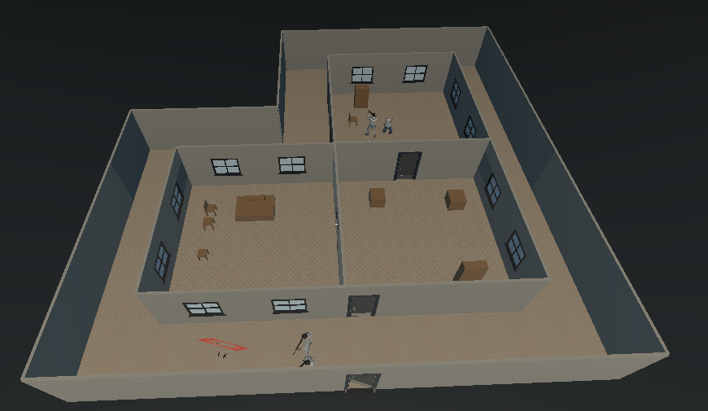
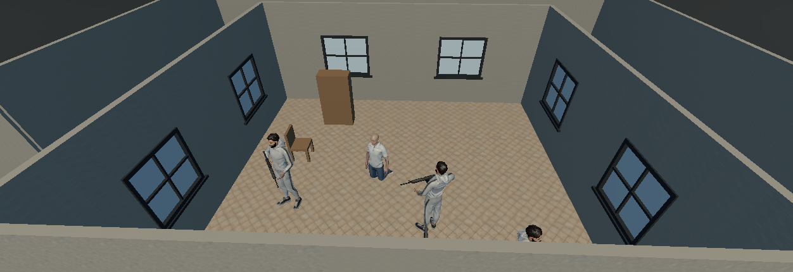
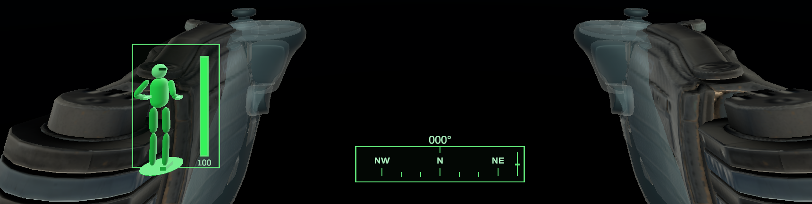
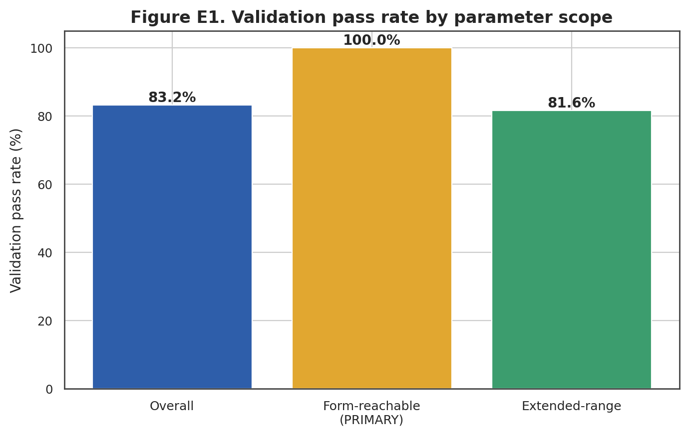
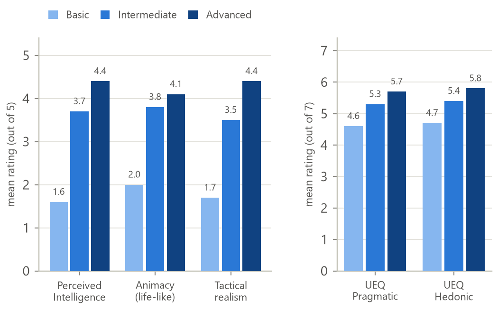
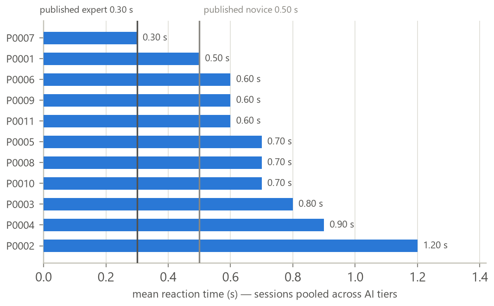
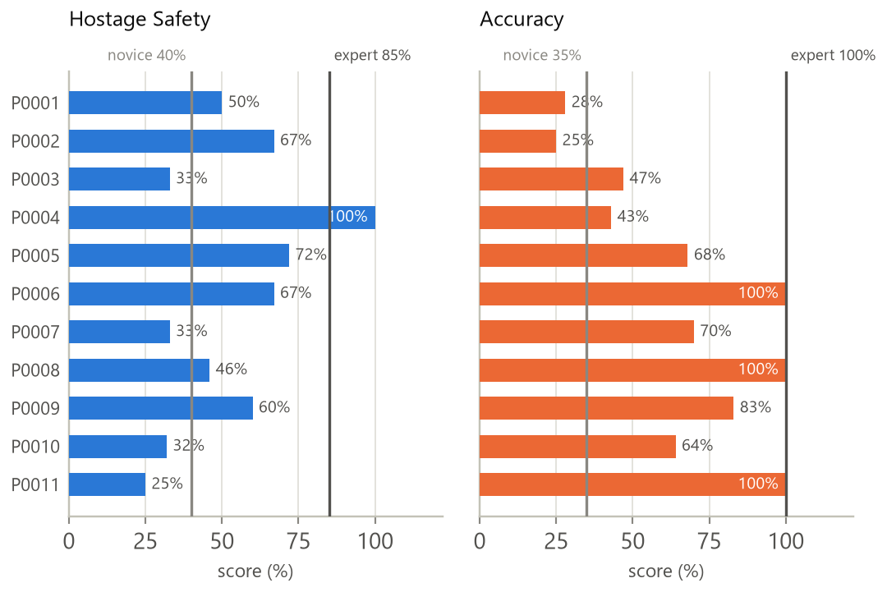

Dynamic Scenario Generation and Evaluation for VR-Based Military Training
Problem Statement
Live hostage-rescue training is expensive and hard to repeat under comparable conditions. Existing VR trainers compound this with fixed/lightly-varied scenarios, NPCs that behave predictably, and feedback limited to a single score with no evidence trail.
Objectives
- Generate spatially-valid, varied missions from evaluator parameters.
- Drive NPCs through event-driven, doctrinally-grounded, multi-tier behaviour.
- Capture trainee cognition/movement non-invasively, honestly against literature.
- Demonstrate — not assert — every subsystem works, with a matched evaluation.
Proposed Solution
A Unity 2022.3 VR prototype for Meta Quest 3, as four cooperating modules around one shared Scenario.json contract + a common event schema — built and evaluated largely in parallel.
Four Cooperating Modules
- M1 Scenario Generation: parameters → validated
Scenario.json - M2 NPC Behaviour: event-driven FSM + squad hunt, 3 AI tiers
- M3 Cognitive Analysis: reaction time + movement → tiered indicators
- M4 Logging & AAR: telemetry → 5 scores + timeline + 2D/3D replay
Our Approach — System Architecture
System in Action




Key Modules & Evaluation Results
Dynamic Scenario Generation
- What: Converts evaluator parameters into a valid, playable mission — the contract every other module consumes.
- Novelty: No existing system combines layout generation, placement, role assignment, validation and export in one pipeline; hostage room is always the deepest, most-defended dead end (BFS depth), never random.
- Method: One seeded
System.Random, 4 layout topologies, two-tier validator (local bounds/overlap/doors + global reachability/hostage-path/roles), seed+1 retry (budget 3). - Evaluation: 2,000-scenario statistical study across 6 experiments (Shapiro-Wilk → ANOVA/Kruskal-Wallis, effect sizes).

NPC Behaviour & Coordination
- What: Drives every terrorist & hostage in-mission via an event-driven FSM plus a squad layer that shares confirmed contact and hunts around the last-seen point.
- Novelty: Grounded in real U.S. Army react-to-contact doctrine and the F.E.A.R. squad-AI model, not game convention — trainees rated the Advanced tier most believable yet lost more missions against it (believability ≠ performance).
- Method: Shared blackboard (PointLastSeen, hunt state, leader), growing search radius, hostage escalation ladder (warning → shot → execution); 3 switchable AI tiers.
- Evaluation: Within-subjects ablation, 21 participants/95 sessions, Godspeed + UEQ-S instruments, Friedman/Wilcoxon.

Cognitive & Movement Behaviour Analysis
- What: Reads the trainee's existing XR head/hand tracking — no extra hardware — to derive movement telemetry and 4-channel reaction time (head, hands, body, trigger).
- Novelty: Combines objective movement/reaction evidence with self-reported SIM-TLX workload in one honestly-tiered evaluation; a rule-based reasoning layer explains, not just reports, why a score is high or low.
- Method: 3 anti-false-positive rules (already-in-motion, 80 ms noise floor, response window+cooldown); 5 Hz sampling; self-calibrating crouch baseline; A/B/C confidence tiers.
- Evaluation: Construct-validity audit of 12 benchmark bands (4 tier A / 5 B / 3 C); one-sample Wilcoxon vs published expert.

Logging, AAR & Session Replay
- What: Subscribes to one shared event bus and turns a completed mission into inspectable evidence — five scores, an incident timeline, a distress index, and a 2D/3D replay.
- Novelty: A distinct Operator Safety axis (separate from mission outcome) plus a hostage psychological distress index — dimensions most commercial/academic AAR tools omit entirely.
- Method: Scores calibrated to NYPD SOP-9, RAND hostage-rescue outcomes & Hick's Law; Freeze scored above Panic (tonic immobility → worse trauma outcomes); zero-instrumentation logging.
- Evaluation: Construct-validity audit vs the Expert Value Table; benchmark + discriminant-validity tests across 21 trainees.

Key Results & Conclusion
Every module was evaluated with a methodology matched to what it produces — a 2,000-scenario statistical study, a controlled ablation with real significance testing, a construct-validity audit, and a benchmark/discriminant-validity audit. M1's generation is valid and traceable to its parameters; M2's AI tiers are perceived as genuinely more intelligent as capability increases; M3 honestly separates trainees from published benchmarks; M4's scoring agrees with every checkable benchmark and discriminates trainees on 3 of 5 scores.
Sentinels demonstrates that parameter-driven generation, tactical NPC behaviour, non-invasive cognition measurement, and evidence-linked AAR can be integrated into one coherent, empirically evaluated VR trainer on consumer hardware.
Limitations
- Single floor, single hostage per mission
- Quest 3 approximate body tracking; ~20-participant cognitive sample
- Greybox (ProBuilder) environments, not production art
Future Work
- Expert (military/tactical) evaluation of realism and training validity
- 15–30 participant SIM-TLX study; trained-personnel transfer study

Group Members
Project Supervisor
Dr. S. C. Premaratne